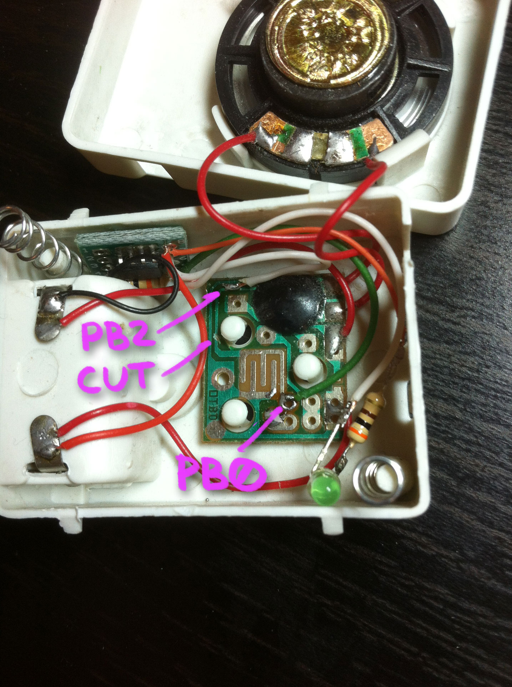

Turn your old (or new) noisy toy into a funny productivity tool!
I had this laughing Dracula toy with glowing eyes since early 90s. For a while I had an idea to turn it into a timer.
Simply cut button wire/trace and solder ATtiny13, it would receive button press and trigger toy.
Some toys triggered by LOW level, some by HIGH (A and B), check your wiring and comment/uncomment defines accordingly. The same applies to LEDs
My Dracula toy was active LOW (button connected trace from the blob to negative battery lead). Eyes were connected to positive battery lead and blob would pull LOW to light them up.
Another toy was active HIGH (button was connected to positive side of the battery).

Internal oscillator is not precise, depends on voltage and temperature and needs calibration. In my cases when countdown was set to 25x60 seconds it actually was 28 and 32 minutes.
"calibration" has nothing to do with actual oscillator calibration and simply means counting ticks for 5 minutes and multiplying result by 5.
Default ticks count is saved/read from EEPROM. When uploading image for the first time you'll need to write EEPROM as well, in case of platformio with this command:
$ pio run --target uploadeep
To calibrate counter, setup your phone or kitchen timer to 5 minutes, start both timers, but don't release toy timer button for another 5-6 seconds until it blinks for the second time. When your phone timer is up, press toy timer button, it will multiply number of ticks by 5 and save this number to EEPROM. That's it!